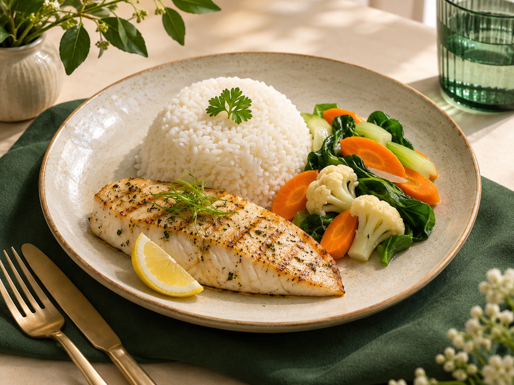

Mulai dari kebutuhan Anda
Menu direncanakan berdasarkan kondisi, pemicu, alergi, dan preferensi Anda.
Katering nutrisi personal untuk kebutuhan GERD dan kardiometabolik, dirancang agar makan lebih mudah dan tetap nikmat.
Daftarkan minat Anda untuk menerima kabar saat Carelinary siap. Belum ada pemesanan atau pembayaran.
Memeriksa kesiapan pendaftaran…
Pilihan makanan sehari-hari bisa ikut berperan.
Menu direncanakan berdasarkan kondisi, pemicu, alergi, dan preferensi Anda.
Gizi yang tepat, disajikan dengan cita rasa yang menggugah selera.
Paket terjadwal — pilih 1, 2, atau 3 waktu makan sesuai rutinitasmu.

Makan nyaman tanpa memperburuk keluhan. Menu disesuaikan dengan pemicu pribadi, porsi, dan cara memasak yang tepat.
Porsi moderat, pengolahan rendah lemak, dan pemantauan pemicu individual — karena satu pola tidak cocok untuk semua orang.
Makan sehat untuk gula darah, tekanan darah, dan kolesterol — tanpa mengorbankan rasa.
Gula darah — porsi karbohidrat terencana, selaras dengan obat dan aktivitas harian.
Tekanan darah — natrium diperhatikan dari garam hingga saus dan makanan olahan.
Kolesterol — lemak jenuh dibatasi; lemak tak jenuh dan serat diutamakan.
Dasar informasi: NIDDK (GERD), ADA (diabetes), AHA (tekanan darah), dan AHA (kolesterol).
Menu tidak menggantikan diagnosis, obat, atau perawatan medis. Penjelasan di atas adalah contoh pertimbangan, bukan janji hasil kesehatan atau resep untuk semua orang.
Disesuaikan untuk Anda.



Ilustrasi menu dan angka gizi belum diverifikasi dari resep, berat bahan, serta cara memasak final. Makanan akan dipersonalisasi menurut kondisi, alergi, obat, tujuan, dan asesmen ahli gizi; satu contoh menu tidak otomatis sesuai untuk semua orang. Informasi ini bukan pengganti konsultasi medis.
Empat prinsip di balik pengalaman makan yang sedang kami rancang.
Menu direncanakan setelah kebutuhan, alergi, pemicu, dan preferensi Anda dipahami.
Konsep evaluasi menu mempertemukan pertimbangan ahli gizi dengan keterampilan chef.
Kami merencanakan bahan berkualitas, termasuk opsi organik dari pemasok yang dapat diverifikasi.
Alternatif kemasan sedang dirancang untuk mengurangi penggunaan plastik sekali pakai.
Pilih rencana yang paling sesuai dengan jadwalmu. Simulasi berikut menggunakan harga Start from Rp80.000 per meal; harga final belum ditetapkan.
Katering nutrisi personal untuk GERD dan kardiometabolik — belum pernah ada sebelumnya. Daftarkan minat Anda sekarang, gratis, tanpa komitmen pembayaran.
Belum ada pemesanan atau pembayaran. Hanya daftar minat.
Jawaban singkat sebelum Carelinary dibuka.
Carelinary adalah konsep katering nutrisi personal yang menggabungkan perhatian pada kebutuhan makan individu dengan pengalaman rasa premium. Fokus awalnya adalah GERD dan kesehatan kardiometabolik.
Tanggal pembukaan belum ditetapkan. Daftarkan nama dan username Instagram Anda di waiting list untuk menerima kabar saat informasi peluncuran tersedia.
Kami akan menghubungi pendaftar melalui Instagram saat ada informasi pembukaan dan program. Belum ada jadwal kontak yang dapat dijanjikan.
Informasikan alergi Anda sebelum memesan saat layanan dibuka. Kesesuaian bahan dan risiko kontak silang perlu dinilai secara individual; kami belum dapat menjamin setiap menu aman untuk semua alergi.
Rencana paket mencakup 5 atau 10 hari kerja dengan pilihan breakfast, lunch, dan dinner hingga tiga kali makan per hari. Cara pemesanan dan ketersediaan paket akan diumumkan saat layanan dibuka.
Simulasi paket dimulai dari Rp80.000 per meal. Harga akhir akan mengikuti pilihan menu, jumlah makan, penyesuaian nutrisi, dan cakupan pengiriman ketika layanan dibuka.